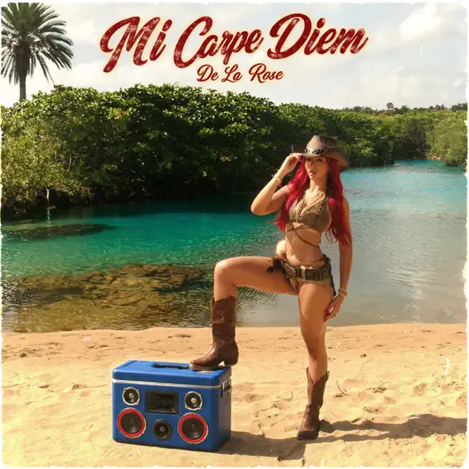

Artist profile
De La Rose
De La Rose is a Puerto Rican singer and songwriter born in 2001. She is known for the viral hit “¿QUEVAHACERHOY?” with Omar Courtz, and she signed with Warner Music Latina as a solo artist.
Listen and explore
Albums
-
.jpg) FX De La Rose
NUBES ft. Omar Courtz
FX De La Rose
NUBES ft. Omar Courtz
-

Mi Carpe Diem La Monda ft. Ryan Castro